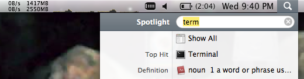
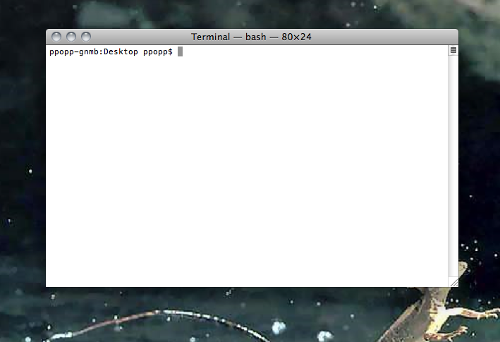
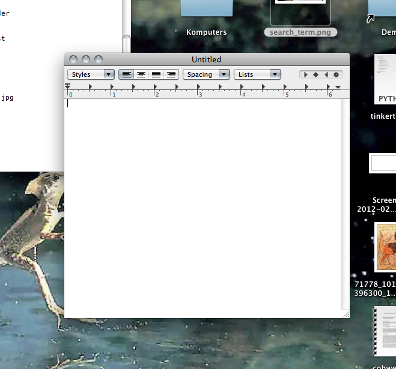
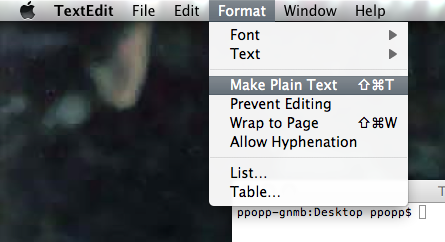

Lesson 5
Press <Cmd-Space>. This brings up your search bar.

Type in the word "terminal" to have it search for the Terminal Application.

Hit <return> to start Terminal.
Refresher
We learned several terminal commands two weeks ago. To run them you just have to type them into the terminal and hit <return>
ls -- list directory contents
cd -- change directory
A while ago we created a folder with your name on it. Use "cd" to change directories until you get there (hint: these were placed on the desktop so you'll have to start with "cd Desktop")
FYI, in these instructions if you're supposed to type something into Terminal, it'll generally be shown as
$ cd Desktop
You don't need to type in the "$ ", but just know that it means to type things into terminal. And don't forget to hit <return> when you're done!
Press <Cmd-Space> again to bring up your Mac spotlight search, and this time type in textedit.
Hit return to start the TextEdit application.

Just to get things rolling, in TextEdit type
print "starting lesson 6!"
Before saving, remember that TextEdit initially tries to save files in rtf (rtf stands for Rich Text Format). We don't want any of that funky jazz because it confuses python, so before saving convert your file to txt format. Go to "Format" in the menu bar and click "Make Plain Text"

Now hit <Cmd-s> to save the file. Save it in your folder with the name "lesson_6.txt".
Go to terminal and run
$ python lesson_6.txt
Class/Object
Just like functions, classes are used extensively throughout programs. Classes allow you to refer to things in a common-sense way. For instance, in the previous lesson we had to hold onto variables x0, y0, x1, y1, and call functions like "canvas.move()". With classes we can just have something we call a "Box" and we can move it by saying box.move().
Copy the code below into text edit and try running it.
# Displays a red circle bouncing around the canvas window.
from Tkinter import *
# define what a "Box" class is...
class Box:
# this is called when a box is created
def __init__(self, x0, y0, x1, y1, deltaX, deltaY, canvas, color, name):
self.x0 = x0
self.y0 = y0
self.x1 = x1
self.y1 = y1
self.deltaX = deltaX
self.deltaY = deltaY
self.canvas = canvas
self.name = name
self.rect = canvas.create_rectangle(x0, y0, x1, y1, fill=color, tag=name)
# this moves the box around the screen.
def move(self, windowWidth, windowHeight):
self.canvas.move(self.name, self.deltaX, self.deltaY)
if self.x1 >= windowWidth or self.x0 < 0:
self.deltaX = -self.deltaX
if self.y1 >= windowHeight or self.y0 < 0:
self.deltaY = -self.deltaY
self.x0 += self.deltaX
self.x1 += self.deltaX
self.y0 += self.deltaY
self.y1 += self.deltaY
# make a window on the computer
window = Tk()
#set the size of the window
windowWidth = 800
windowHeight = 600
canvas = Canvas(window, width=windowWidth, height=windowHeight)
canvas.pack()
# create a single box
box = Box(10, 50, 60, 100, 10, 10, canvas, 'red', 'redbox')
# this loop never stops! It just keeps going till you quit the program
while True:
# the animation happens here
# move the box
box.move(windowWidth, windowHeight)
# wait a little bit
canvas.after(20)
# show the canvas on the screen
canvas.update()
window.mainloop()
Play around with the code a little bit, changing numbers and words and seeing what happens. Try to make the box be green, then turn the box into an oval.
One nice thing about classes and objects is that you can create tons of objects from a single class. Copy and run the code below.
# Displays a red circle bouncing around the canvas window.
from Tkinter import *
# define what a "Box" class is...
class Box:
# this is called when a box is created
def __init__(self, x0, y0, x1, y1, deltaX, deltaY, canvas, color, name):
self.x0 = x0
self.y0 = y0
self.x1 = x1
self.y1 = y1
self.deltaX = deltaX
self.deltaY = deltaY
self.canvas = canvas
self.name = name
self.rect = canvas.create_rectangle(x0, y0, x1, y1, fill=color, tag=name)
# this moves the box around the screen.
def move(self, windowWidth, windowHeight):
self.canvas.move(self.name, self.deltaX, self.deltaY)
if self.x1 >= windowWidth or self.x0 < 0:
self.deltaX = -self.deltaX
if self.y1 >= windowHeight or self.y0 < 0:
self.deltaY = -self.deltaY
self.x0 += self.deltaX
self.x1 += self.deltaX
self.y0 += self.deltaY
self.y1 += self.deltaY
# make a window on the computer
window = Tk()
#set the size of the window
windowWidth = 800
windowHeight = 600
canvas = Canvas(window, width=windowWidth, height=windowHeight)
canvas.pack()
# create two boxes
redbox = Box(10, 50, 60, 100, 10, 10, canvas, 'red', 'redbox')
bluebox = Box(10, 50, 60, 100, 10, 10, canvas, 'blue', 'bluebox')
# this loop never stops! It just keeps going till you quit the program
while True:
# the animation happens here
# move the boxes
redbox.move(windowWidth, windowHeight)
bluebox.move(windowWidth, windowHeight)
# wait a little bit
canvas.after(20)
# show the canvas on the screen
canvas.update()
window.mainloop()
Pretty sweet right! Can you add a third box to the screen?
Now if you think you have this all down, try and make a list of boxes and use a for loop to call each box's "move" function.